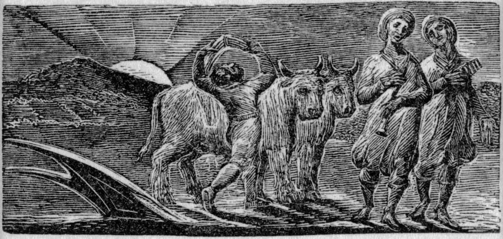

本章将探讨田园诗在希腊化时期的埃及亚历山大港这座大都市的创作，阐释这个文类的文学造诣及所抒发的对乡村简朴生活的怀旧之情，如何吸引了在城市居住的有学问的诗人及其读者。我们还将考察这个文类在罗马经历了怎样的转变，因为随着当代政治和内战进入乡村世界，那里作为逃离或替代城市生活的世外桃源的可能性也一并土崩瓦解。不出所料，在一个基本上以农业为主的社会，诗人们总会写到乡村，忒奥克里托斯在公元前3世纪初写于亚历山大港宫廷的作品正式确立了这个文类，但早在那以前很久，希腊文学就已经出现了田园的元素。比如说我们在本书第二章曾看到，早期史诗诗人赫西俄德在他的教谕作品《工作与时日》中，就把乡村描述成一个诚实劳作的地方；而强调乡村是一个美丽和宁静的所在，作为田园诗这种文类的标志之一，早已出现在“locus amoenus ”（意即“乐土”）这一古老的主旋律中，这一旋律贯穿了自荷马以降的整个希腊文学，特别是《奥德赛》中描写的法伊阿基亚人和独眼巨人拥有的肥沃土地、迷人的卡吕普索和基尔克的岛屿，以及奥德修斯日思夜想的伊萨卡岛。
不过虽然忒奥克里托斯不是第一个写乡村生活的作家，他却是创作了主题为“牧歌”（“bucolic song”，希腊语boukolos 的意思是“牧牛郎”）——也就是说，他关注的主题是牧人在乡村场景中的音乐表演——的组诗的第一位诗人，因而确定了他田园诗创始人的地位。忒奥克里托斯的作品涉猎广泛多样，八首田园诗只是其中的一部分，但它们一直是他最受欢迎，也最有影响的作品。因此，古代人把他所有的诗歌都称为“田园牧歌”（或eidyllia ，意为“小插曲”），但正是因为这个词被用于田园诗，才使得“idyll”或“idyllic”在现代英语中有了乡村美景和宁静空间的意思。牧牛郎、绵羊倌、山羊倌表演或比赛音乐和歌曲这些在我们看来充满古意的场景，就是从古代世界的现实中取材的。在那里，孤独的牧人靠唱歌或吹奏木笛来打发无聊的时光，如果在山上遇到一个劳动者同伴，他们大概也会一起吹奏或歌唱，或者互相比试。因此，忒奥克里托斯的诗作是建立在乡村生活真实特征的基础上的，但把它极大地风格化和理想化了，如此创造出来的田园世界在很大程度上是人为的、虚假的。因为不同于赫西俄德对辛苦的农业劳动的写实主义记述，这些田园牧歌中的人物更关注如何炫耀自己的音乐才能，或悲叹得不到回应的爱情（二者往往合而为一）。
忒奥克里托斯使用史诗的格律来描写与英雄无关的内容——说着土气的多利安方言的牧人，有时甚至还用下流的语言打趣——创造了一种艺术化的失谐效果，旨在用它的独创性和技巧取悦世故的亚历山大港读者。此外，最终的效果并非嘲笑这些“乡巴佬”，而是分享他们对诗和歌曲的巨大享受。第一首的开头几行就明确传达了这一主旨，绵羊倌塞尔西斯对一位没有名字的山羊倌说：
（第一首，第1—11行）
换句话说，正如赫西俄德的《工作与时日》和维吉尔的《农事诗》只是貌似写到农业（见第二章），忒奥克里托斯的田园诗与其说写的是山羊或羊羔，毋宁说更关心诗歌及其在诗歌传统中的地位，不管那些羊是多么珍贵的奖品。这样的“元诗歌”，也就是对诗歌本身的创作及其价值的诗化思考，在其他古代文类中也有出现（例如在抒情诗、喜剧、爱情哀歌或讽刺文学中），但它对田园诗尤其重要，因为诗中的乡村劳动者同时也是诗歌的创作者。
这一点在题为《丰收节》的第七首诗中体现得最为明显，这首诗的叙述者希米奇达斯本人就是田园诗的创作者和表演者。这首诗讲述了希米奇达斯数年前曾在科斯岛上遇到了山羊倌利希达斯。他们还未比试歌唱，利希达斯就承诺把自己的牧羊棍送给希米奇达斯作为奖品：
（第七首，第43—48行）
忒奥克里托斯在这里呼应了他同时代的亚历山大里亚派诗人卡利马科斯的审美，后者偏爱博学的小篇幅诗作，因而也抵制夸夸其谈、学荷马史诗学得不伦不类的作品（见第一章）。此外，利希达斯把自己的牧羊棍作为礼物，这样的场景会让读者忆起从前那些诗学上的指引，像赫西俄德在赫利孔山上放牧羊群时，缪斯出现了，给了他灵感，让他成为一名诗人（《神谱》，第22—34行）。文学宣言与希米奇达斯成为一名诗人的授衔仪式相结合，让许多人把叙述者理解为忒奥克里托斯本人的象征，但事情没有这么简单，这里也幽默地捉弄了希米奇达斯一下，他神气十足地以田园“诗人”自居，恰与山羊倌利希达斯真正贴近乡村及其传统形成了鲜明的对比。
田园诗还将乡村生活的朴素和真实与都市生活的世故和伪装进行了更加宏观的对比，虽然悖论是，这一对比是由居住在城市的诗人通过博学的诗歌为自己和读者表达出来的。利希达斯与乡村世界的联系更加令人信服，就是这一对比的微观体现。田园诗于城市扩张时期在最绚烂繁华的希腊化城市亚历山大港发展起来，也并非巧合。我们的脑海中会涌现出现代时期类似的例子：德国浪漫派的自然哲学（Naturphilosophie ），以及他们通过柯勒律治对华兹华斯和其他湖畔诗人的影响，这一切都是在欧洲北部工业革命最繁荣的时期（约1760—1820）发生的。如此说来，把乡村世界作为逃离都市生活的避风港这一观念的历史十分悠久，它让今天的我们不时产生隐居乡野的乌托邦想象，但早在前工业社会就已经散发出诱人的魅力了。
古代田园诗的确利用了这种对乡村的理想化想象，这是城市居民而非在土地上生活和劳作之人虚构出来的，他们以为在那里地位低下但知足常乐的劳动者们享受着与自然世界的神秘相通——但忒奥克里托斯也揭露了这一切的虚伪和乌托邦性质。在取笑过于圆滑的田园诗人希米奇达斯时，忒奥克里托斯明确表示这是供都市读者取乐的，我们不禁会问到底什么样的都市人会真正了解乡村，并质疑他们的怀旧——他们对那种受到威胁或业已消失的古老的简朴生活方式充满眷恋，但事实上他们所怀念的东西根本不曾存在过。于是，忒奥克里托斯与田园理想之间的反讽性距离，也让他的作品摆脱了令人腻味的感伤主义，不管是在他早期的继承者比翁的《阿多尼斯挽歌》中，还是在现代欧洲田园诗传统的许多文本和画作中，都充斥着这种感伤情怀。最后，忒奥克里托斯的田园诗对乡村生活的关注也是希腊化时期文学和艺术走向“写实主义”的大趋势的一部分（这类田园诗场景在后来作为昂贵庄园装饰品的罗马壁画中非常流行），而他对乡村安逸和简朴的赞美也与他同时代的哲学学派有所共鸣，如力图灌输“无忧无虑”和“朴素生活”的伊壁鸠鲁派。
忒奥克里托斯的田园诗继承人，公元前2世纪的希腊诗人莫斯霍斯和比翁，在他们非常优雅的诗作中改写了田园诗主旋律，特别借鉴了忒奥克里托斯对爱情失望和痛苦的描写。但真正成功地让田园诗这种体裁有了惊人的原创性，并为其指出发人深思的方向的，却是写出了《牧歌》的维吉尔，那是他出版的第一部作品，完成于公元前1世纪30年代初中期。与忒奥克里托斯不同，维吉尔创作了一部独立的田园诗集，因此就田园诗而言，是罗马人对希腊作品的模仿和改写才使得这种文类最终成形了。维吉尔对田园诗传统的继承在这部诗集最初的书名中体现得更加清楚——Bucolica （“牧牛歌”），后来他才把书名改成了较为直白的Eclogues ，原意是（从更大的文本作品中选出的）“选集”。维吉尔这部诗集包括十首田园诗，他进行了精心的选择和编排，实现了多样性（避免将形式或主题相似的诗作安排在一起）和对称性。鉴于上一代最著名的罗马诗人卡图卢斯的诗作关注都市生活，维吉尔选择田园诗可能会显得很不时尚，但那也是它的魅力之一，因为他可以选用一种从未用拉丁语写过的体裁，使它与当代罗马人的生活息息相关，来显示自己的诗歌技巧和独创性。
令人惊叹的是，维吉尔能够做到这一点，是因为他拓展了田园诗的边界，随着整个罗马世界陷入内战，他把当代政治纳入了田园诗的主题范围。大约同一时期（公元前37年），学者瓦罗出版了一部以对话形式写成的散文体农业专论《论农业》，以一种带有戏弄讽刺意味的方式来表现罗马乡村的怀旧和理想化形象，但维吉尔选择田园诗则更为切中时弊，因为政治和战争进入乡间田园，破坏了那里的稳定宁静，令人更觉心酸和愤怒。因此，维吉尔的田园诗是革命性的，在他的笔下，一个原本远离政治的文类变成了对正在摧毁共和国的内战和政治暴力的深刻思考。
在安东尼和屋大维的军队击溃了布鲁图斯和卡西乌斯的军队，尤利乌斯· 凯撒被暗杀，以及公元前42年的腓立比战役之后，屋大维军团中那些复员老兵被安置在整个意大利被没收的土地上，以武力驱逐大批人口，给乡村生活带来了灾难性的后果。《牧歌》的开头几行就明确阐明了随之而来的混乱——梅利伯诉说了自己被剥夺财产和流放的痛苦经历，相比之下，同为牧羊人的提屠苏则更加幸运：
（第一首，第1—4行） [1]
在《牧歌》第九首中，情绪变得更加低落，莫埃里必须在曾经属于他的农田上耕作，而那片土地如今却成了一位疏远而冷酷的士兵的财产。莫埃里向他的朋友利西达斯解释说，就连他们的歌手同伴，伟大的梅那伽，也无法用他的诗歌挽救这片土地：
（第九首，第11—13行） [2]
“鹰隼”也是罗马军团的军旗，象征着战争毁灭了牧羊人的和谐世界。他们的诗歌不仅无力回天，也正在从记忆中消失——莫埃里难过地说：“而现在这么多的歌都忘了”（第九首，第53行）——全诗结尾，两位等待着梅那伽，谁也不知道他什么时候回来，甚至怀疑他还会不会回来。
和他后来的作品，即（第二章讨论的）《农事诗》和《埃涅阿斯纪》一样，《牧歌》表达了对和平的强烈渴望，却没有那么自信，因为它们创作的时候，屋大维还没有明确地以“共和国的复兴者”自居。话虽如此，维吉尔在诗集的头一首诗中虽然对被剥夺财产的梅利伯表达了极大的同情，却也赞扬了某个“年轻人”（即屋大维）让乡村恢复了和平和秩序，而《牧歌》第四首期盼着一个孩子的出世，那会是罗马重回黄金时代的好兆头。这个孩子最有可能的原型是安东尼和屋大维娅（屋大维的姐姐）未出世的儿子，但希望中的继承人最终没有出世，而且无论如何，两位军阀于公元前40年通过联姻缔结的条约不久也土崩瓦解了。可能是为了适应不断变化的时局，维吉尔修订了这首诗，表达了无所不包的对和平和复兴的渴望。
在拓展田园诗的政治边界的同时，维吉尔也保留了忒奥克里托斯关注爱情、自然以及诗歌本身的性质和力量的特点。和忒奥克里托斯的《田园诗》第七首一样，《牧歌》第六首也体现了亚历山大时期对小篇幅博学诗作的审美，诗中阿波罗本人劝导诗人说，“一个牧人应该把羊喂得/胖胖的，但应该写细巧一些的诗歌”（第4—5行） [3] 。维吉尔在这里改编了卡利马科斯《起源》中的一个著名场景，紧接着的那首诗则写到了维吉尔的朋友伽卢斯的授衔仪式，他成为在技巧和博学方面与卡利马科斯媲美的诗人。在《牧歌》第十首中，维吉尔写到了伟大的爱情哀歌诗人伽卢斯（见第三章），他因为遭到爱人吕科丽丝的残酷拒绝而前往阿卡迪亚那无忧无虑的田园世界寻求安慰，甚至试图放弃爱情哀歌转而写田园诗，最终却没能抵挡住自己的激情，因为（他的结束语说）“爱情征服万物，我们也只有向爱情投降”（第69行） [4] 。因此，维吉尔既赞美了伽卢斯是一位卓越的爱情诗人，同时也吹捧了他自己对（不同）诗歌体裁的把握。诚然如此，这首诗（和整部书）的最后几行暗含着转向新的诗歌“领域”之意，维吉尔与田园诗说再见，而歌者从树下的田园式安逸中站起身来，在苍茫的暮色中赶着山羊回家：“山羊们吃够了，回家去吧，黄昏星已经升起。”（第77行） [5]
然而维吉尔并没有真正抛弃田园诗，因为田园诗的主旋律弥漫在《农事诗》和《埃涅阿斯纪》中，特别是其中关于意大利乡村遭到内战蹂躏的伤痛意象，它们也影响了整个奥古斯都时期的文学，因为奥古斯都强调，在整个意大利和帝国范围内重振乡村生活是他的诸多卓著功勋之一。维吉尔的古代田园诗继承者中有作品存世的很少，而且他们都缺乏维吉尔对政治和文学格局的敏锐感知，因为他们笔下的牧羊人吹奏的都是让皇帝们感觉良好的颂歌。诗人与诗意田园之间的距离、“阿卡迪亚”（只有维吉尔偶尔提起，后来却成为田园安逸生活的重要象征）和不怎么理想的混乱现实之间的差距，是忒奥克里托斯和维吉尔的田园诗作品最大的成功之处，它们的缺席导致了后来很多田园诗传统文学和艺术的滥情倾向。最成功的现代田园诗作品是能够批判地利用这一差距的作品——比如弥尔顿在自己的田园哀歌《利西达斯》（1638）中谴责了教堂的腐败——而这些作品也证明，用以写作田园诗闻名的一位当代诗人的话来说，田园诗仍然能够警示读者“那张色彩斑斓的文学地图与现实世界的丑陋情状之间，始终难以协调”（谢默斯· 希尼，《牧歌“弥留之际”：关于田园诗的生命力》；参见图7）。

图7 英国浪漫主义的田园风光：《快活的牧牛人从田间载歌而归》，是威廉· 布莱克为罗伯特· J. 桑顿编辑的《维吉尔的田园诗》（伦敦，1821年）所作的一系列木刻版画中的一幅
[1] 译文引自杨宪益译，《牧歌》，人民文学出版社1957年版，第1页。
[2] 译文引自杨宪益译，《牧歌》，人民文学出版社1957年版，第40页。
[3] 译文引自杨宪益译，《牧歌》，人民文学出版社1957年版，第25页。
[4] 同上书，第47页。
[5] 译文引自杨宪益译，《牧歌》，人民文学出版社1957年版，第48页。